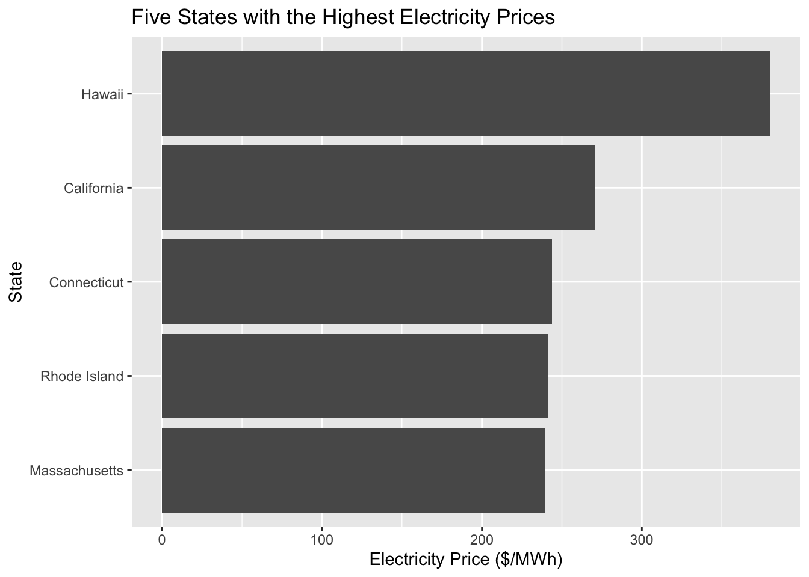
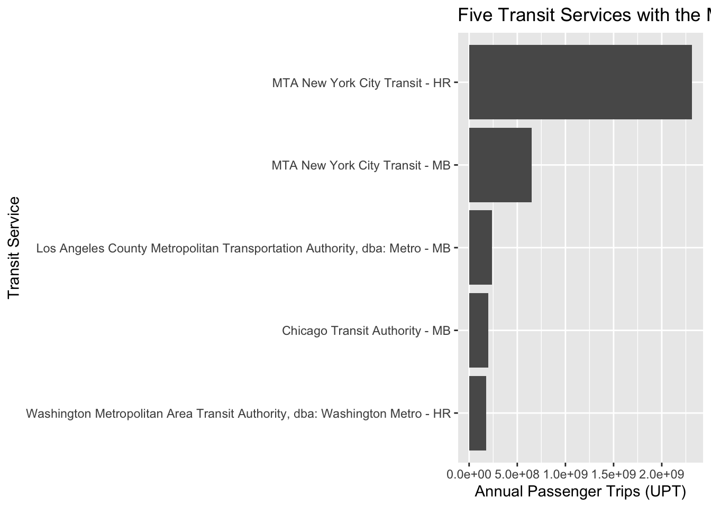
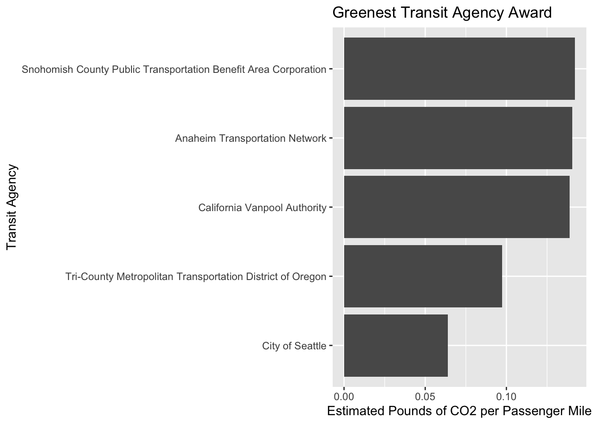
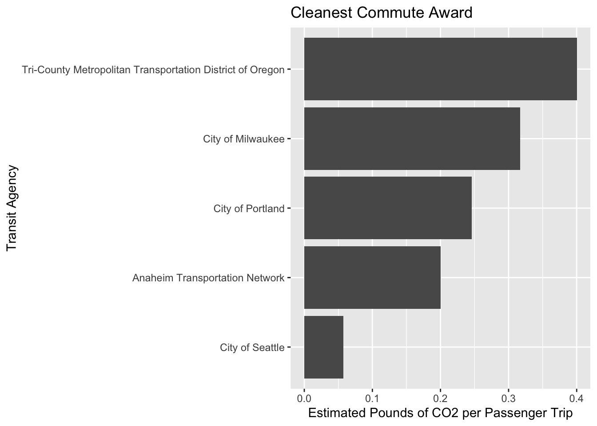

Mini-Project #02
Introduction
Public transportation plays an important role in reducing emissions by providing alternatives to personal vehicle travel. This report examines transit agencies across the United States to identify which agencies provide the greatest environmental benefits.
Using data from the National Transit Database and the U.S. Energy Information Administration, this analysis will compare transit energy consumption, passenger activity, and estimated emissions reductions.
Data Acquisition
State Electricity Profiles
Energy Consumption
Data Cleaning and Preparation
Recoding Transportation Modes
Data Integration and Initial Exploration
State Electricity Profiles
Question 1: Five States with the Most Expensive Electricity
Question 2: Five States with the Dirtiest Electricity
| State | CO2 per MWh | Primary Energy Source |
|---|---|---|
| West Virginia | 1912 | Coal |
| Kentucky | 1744 | Coal |
| Wyoming | 1724 | Coal |
| Missouri | 1456 | Coal |
| Hawaii | 1426 | Petroleum |
Question 3: Weighted Average CO2 Emissions in the United States
weighted_average
1 784.8565The generation-weighted average CO2 emissions across the United States is approximately 784.86 pounds of CO2 per MWh.
Question 4: Three Rarest Primary Energy Sources
primary_source n
1 Natural gas 27
2 Coal 9
3 Nuclear 5
4 Hydroelectric 4
5 Wind 4
6 Petroleum 1| Primary Energy Source | State | Electricity Price ($/MWh) |
|---|---|---|
| Hydroelectric | Idaho | 95.1 |
| Hydroelectric | Oregon | 111.1 |
| Hydroelectric | Vermont | 184.1 |
| Hydroelectric | Washington | 101.3 |
| Petroleum | Hawaii | 380.0 |
| Wind | Iowa | 93.4 |
| Wind | Kansas | 112.1 |
| Wind | New Mexico | 91.8 |
| Wind | South Dakota | 108.7 |
Question 5: New York vs. Texas Electricity
state CO2_MWh
1 New York 537
2 Texas 823[1] 1.532588Based on CO2 emissions per MWh, New York’s electricity is approximately 1.53 times cleaner than Texas’s electricity.
EDA - NTD Service
Question 6: Five Transit Services with the Most Annual Passenger Trips

Question 7: Average Trip Length on MTA NYC
The average trip length for MTA New York City Transit is approximately 3.18 miles per passenger trip.
Question 8: Are All States Represented in the NTD Service Dataset?
character(0)All 50 U.S. states are represented in the NTD Service dataset. No states are missing from the data.
Data Analysis: Combining Transit and Electricity Data
Data Analysis: Combining Transit and Electricity Data
[1] 1123Calculating Electricity Emissions
# A tibble: 6 × 3
agency_id mode_name electric_emissions
<dbl> <chr> <dbl>
1 1 Demand Response 0
2 1 Ferryboat 0
3 1 Motorbus 548737.
4 1 Streetcar Rail 523881.
5 1 Trolleybus 2854414.
6 1 Vanpool 5008.Calculating Fuel Emissions
# A tibble: 6 × 4
agency_id mode_name diesel_emissions gasoline_emissions
<dbl> <chr> <dbl> <dbl>
1 1 Demand Response 0 19297313.
2 1 Ferryboat 6468518. 0
3 1 Motorbus 203667163. 3676680.
4 1 Streetcar Rail 0 0
5 1 Trolleybus 0 0
6 1 Vanpool 0 8762512.Additional Fuel Emissions
# A tibble: 6 × 3
agency_id mode_name lpg_emissions
<dbl> <chr> <dbl>
1 1 Demand Response 5064202.
2 1 Ferryboat 0
3 1 Motorbus 0
4 1 Streetcar Rail 0
5 1 Trolleybus 0
6 1 Vanpool 0 Additional Fuel Emissions and Combined Estimate
# A tibble: 6 × 5
`Agency Name` mode_name estimated_emissions emissions_per_trip
<chr> <chr> <dbl> <dbl>
1 King County Demand Response 24361515. 19.1
2 King County Ferryboat 6468518. 11.8
3 King County Motorbus 210805647. 2.67
4 King County Streetcar Rail 523881. 0.322
5 King County Trolleybus 2854414. 0.271
6 King County Vanpool 8767520. 5.55
# ℹ 1 more variable: emissions_per_mile <dbl>Transit Agency Awards
# A tibble: 5 × 3
`Agency Name` mode_name emissions_per_mile
<chr> <chr> <dbl>
1 Snohomish County Public Transportation Benefit A… Motorbus 0.000172
2 Tri-County Metropolitan Transportation District … Motorbus 0.00402
3 Kitsap County Public Transportation Benefit Area… Motorbus 0.0175
4 Central Puget Sound Regional Transit Authority Light Ra… 0.0462
5 City of Seattle Monorail… 0.0639 # A tibble: 5 × 3
`Agency Name` mode_name emissions_per_trip
<chr> <chr> <dbl>
1 Snohomish County Public Transportation Benefit A… Motorbus 0.000966
2 Tri-County Metropolitan Transportation District … Motorbus 0.0143
3 City of Seattle Monorail… 0.0575
4 City of Portland Aerial T… 0.105
5 Kitsap County Public Transportation Benefit Area… Motorbus 0.113 # A tibble: 1 × 2
median_per_trip median_per_mile
<dbl> <dbl>
1 5.86 1.07Award Comparison Graphs

